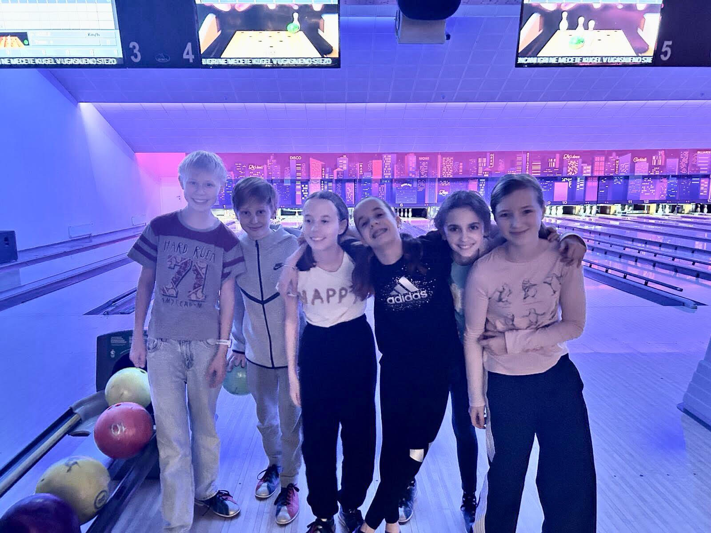

Vrednote
Nam se zdijo vrednote zelo pomembne pri FLL-ju, ker zaradi njih boljše sodeluješ, se spoprijateljiš in se zabavaš.Mi smo vrednote upošetvali skooraj vedno. Trudili smo se upoštevati vrednote tudi, ko nismo bili na FLL-ju.
Skupno preživljanje časa
Ker smo toliko časa preživeli na FLL-ju, smo se zelo povezali in začeli čas prezivljati skupaj tudi izmed šole. Skupaj smo hodili na peš domov ali na avtobuse.Enkrat smo celo šli bowlat skupaj in na pico.

Drug drugega smo sprejemali kakršen je. Zaradi časa, ki smo ga preživel skupaj smo celo začeli sanjati drug o drugem.